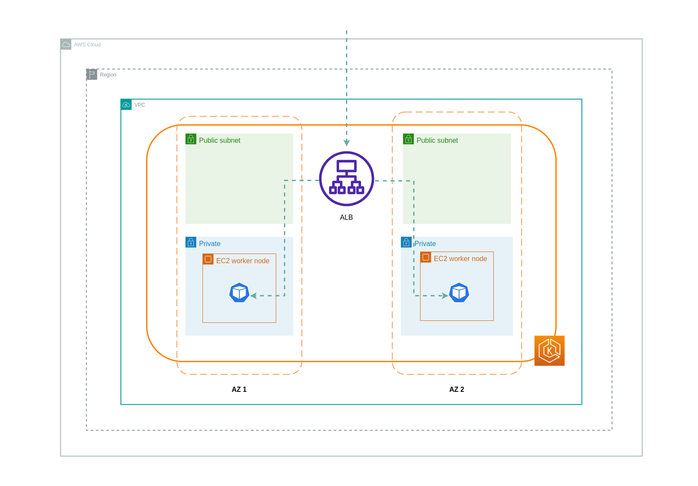
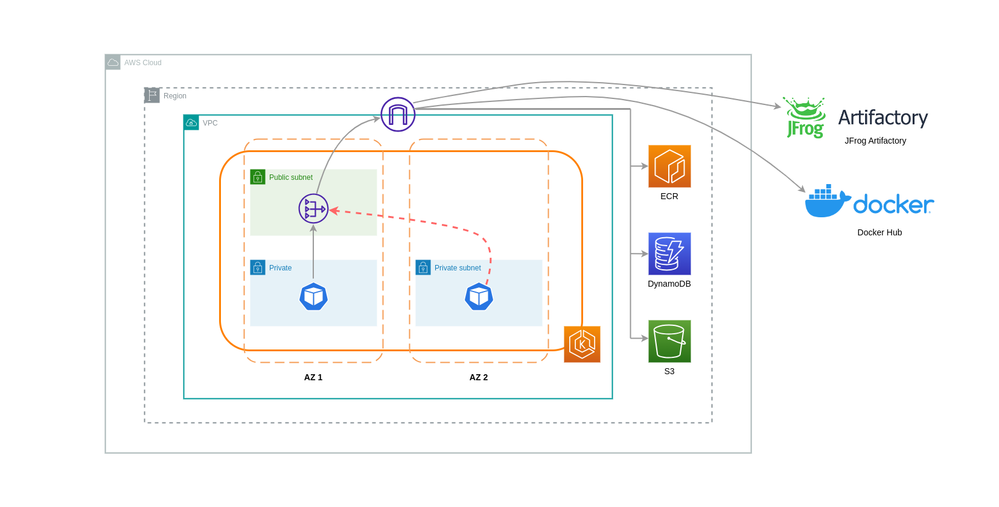
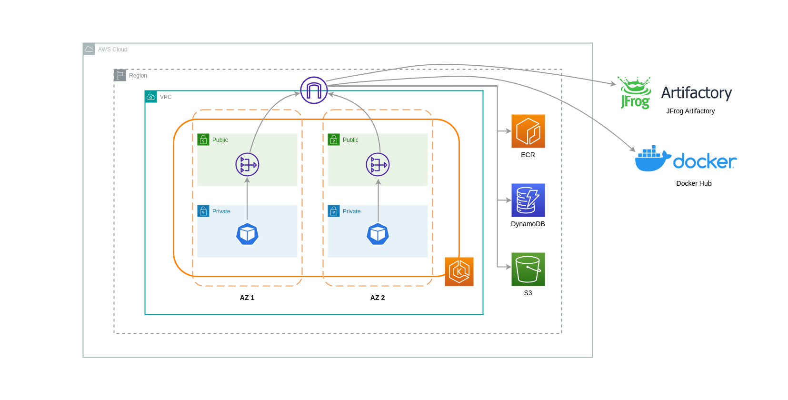

We've Moved to the AWS Docs! 🚀
This content has been updated and relocated to improve your experience. Please visit our new site for the latest version: AWS EKS Best Practices Guide on the AWS Docs
Bookmarks and links will continue to work, but we recommend updating them for faster access in the future.
date: 2023-09-22 authors: - Lukonde Mwila
Cost Optimization - Networking¶
Architecting systems for high availability (HA) is a best practice in order to accomplish resilience and fault-tolerance. In practice, this means spreading your workloads and the underlying infrastructure across multiple Availability Zones (AZs) in a given AWS Region. Ensuring these characteristics are in place for your Amazon EKS environment will enhance the overall reliability of your system. In conjunction with this, your EKS environments will likely also be composed of a variety of constructs (i.e. VPCs), components (i.e. ELBs), and integrations (i.e. ECR and other container registries).
The combination of highly available systems and other use-case specific components can play a significant role in how data is transferred and processed. This will in turn have an impact on the costs incurred due to data transfer and processing.
The practices detailed below will help you design and optimize your EKS environments in order to achieve cost-effectiveness for different domains and use cases.
Pod to Pod Communication¶
Depending on your setup, network communication and data transfer between Pods can have a significant impact on the overall cost of running Amazon EKS workloads. This section will cover different concepts and approaches to mitigating the costs tied to inter-pod communication, while considering highly available (HA) architectures, application performance and resilience.
Restricting Traffic to an Availability Zone¶
Frequent egress cross-zone traffic (traffic distributed between AZs) can have a major impact on your network-related costs. Below are some strategies on how to control the amount of cross-zone traffic between Pods in your EKS cluster.
If you want granular visibility into the amount of cross-zone traffic between Pods in your cluster (such as the amount of data transferred in bytes), refer to this post.
Using Topology Aware Routing (formerly known as Topology Aware Hints)

When using topology aware routing, it's important to understand how Services, EndpointSlices and the kube-proxy work together when routing traffic. As the diagram above depicts, Services are the stable network abstraction layer that receive traffic destined for your Pods. When a Service is created, multiple EndpointSlices are created. Each EndpointSlice has a list of endpoints containing a subset of Pod addresses along with the nodes they're running on and any additional topology information. kube-proxy is a daemonset that runs on every node in your cluster and also fulfills a role of internal routing, but it does so based on what it consumes from the created EndpointSlices.
When topology aware routing is enabled and implemented on a Kubernetes Service, the EndpointSlice controller will proportionally allocate endpoints to the different zones that your cluster is spread across. For each of those endpoints, the EndpointSlice controller will also set a hint for the zone. Hints describe which zone an endpoint should serve traffic for. kube-proxy will then route traffic from a zone to an endpoint based on the hints that get applied.
The diagram below shows how EndpointSlices with hints are organized in such a way that kube-proxy can know what destination they should go to based on their zonal point of origin. Without hints, there is no such allocation or organization and traffic will be proxied to different zonal destinations regardless of where it's coming from.
In some cases, the EndpointSlice controller may apply a hint for a different zone, meaning the endpoint could end up serving traffic originating from a different zone. The reason for this is to try and maintain an even distribution of traffic between endpoints in different zones.
Below is a code snippet on how to enable topology aware routing for a Service.
apiVersion: v1
kind: Service
metadata:
name: orders-service
namespace: ecommerce
annotations:
service.kubernetes.io/topology-mode: Auto
spec:
selector:
app: orders
type: ClusterIP
ports:
- protocol: TCP
port: 3003
targetPort: 3003
The screenshot below shows the result of the EndpointSlice controller having successfully applied a hint to an endpoint for a Pod replica running in the AZ eu-west-1a.

Note
It's important to note that topology aware routing is still in beta. Also, this feature is more predictable when workloads are widely and evenly distributed across the cluster topology. Therefore, it is highly recommended to use it in conjunction with scheduling constraints that increase the availability of an application such as pod topology spread constraints.
Using Autoscalers: Provision Nodes to a Specific AZ
We strongly recommend running your workloads in highly available environments across multiple AZs. This improves the reliability of your applications, especially when there is an incident of an issue with an AZ. In the case you're willing to sacrifice reliability for the sake of reducing their network-related costs, you can restrict your nodes to a single AZ.
To run all your Pods in the same AZ, either provision the worker nodes in the same AZ or schedule the Pods on the worker nodes running on the same AZ. To provision nodes within a single AZ, define a node group with subnets belonging to the same AZ with Cluster Autoscaler (CA). For Karpenter, use “topology.kubernetes.io/zone” and specify the AZ where you'd like to create the worker nodes. For example, the below Karpenter provisioner snippet provisions the nodes in the us-west-2a AZ.
Karpenter
apiVersion: karpenter.sh/v1alpha5
kind: Provisioner
metadata:
name: single-az
spec:
requirements:
- key: "topology.kubernetes.io/zone“
operator: In
values: ["us-west-2a"]
Cluster Autoscaler (CA)
apiVersion: eksctl.io/v1alpha5
kind: ClusterConfig
metadata:
name: my-ca-cluster
region: us-east-1
version: "1.21"
availabilityZones:
- us-east-1a
managedNodeGroups:
- name: managed-nodes
labels:
role: managed-nodes
instanceType: t3.medium
minSize: 1
maxSize: 10
desiredCapacity: 1
...
Using Pod Assignment and Node Affinity
Alternatively, if you have worker nodes running in multiple AZs, each node would have the label topology.kubernetes.io/zone with the value of its AZ (such as us-west-2a or us-west-2b). You can utilize nodeSelector or nodeAffinity to schedule Pods to the nodes in a single AZ. For example, the following manifest file will schedule the Pod inside a node running in AZ us-west-2a.
apiVersion: v1
kind: Pod
metadata:
name: nginx
labels:
env: test
spec:
nodeSelector:
topology.kubernetes.io/zone: us-west-2a
containers:
- name: nginx
image: nginx
imagePullPolicy: IfNotPresent
Restricting Traffic to a Node¶
There are cases where restricting traffic at a zonal level isn't sufficient. Apart from reducing costs, you may have the added requirement of reducing network latency between certain applications that have frequent inter-communication. In order to achieve optimal network performance and reduce costs, you need a way to restrict traffic to a specific node. For example, Microservice A should always talk to Microservice B on Node 1, even in highly available (HA) setups. Having Microservice A on Node 1 talk to Microservice B on Node 2 may have a negative impact on the desired performance for applications of this nature, especially if Node 2 is in a separate AZ altogether.
Using the Service Internal Traffic Policy
In order to restrict Pod network traffic to a node, you can make use of the Service internal traffic policy. By default, traffic sent to a workload's Service will be randomly distributed across the different generated endpoints. So in a HA architecture, that means traffic from Microservice A could go to any replica of Microservice B on any given node across the different AZs. However, with the Service's internal traffic policy set to Local, traffic will be restricted to endpoints on the node that the traffic originated from. This policy dictates the exclusive use of node-local endpoints. By implication, your network traffic-related costs for that workload will be lower than if the distribution was cluster wide. Also, the latency will be lower, making your application more performant.
Note
It's important to note that this feature cannot be combined with topology aware routing in Kubernetes.

Below is a code snippet on how to set the internal traffic policy for a Service.
apiVersion: v1
kind: Service
metadata:
name: orders-service
namespace: ecommerce
spec:
selector:
app: orders
type: ClusterIP
ports:
- protocol: TCP
port: 3003
targetPort: 3003
internalTrafficPolicy: Local
To avoid unexpected behaviour from your application due to traffic drops, you should consider the following approaches:
- Run enough replicas for each of the communicating Pods
- Have a relatively even spread of Pods using topology spread constraints
- Make use of pod-affinity rules for co-location of communicating Pods
In this example, you have 2 replicas of Microservice A and 3 replicas of Microservice B. If Microservice A has its replicas spread between Nodes 1 and 2, and Microservice B has all 3 of its replicas on Node 3, then they won't be able to communicate because of the Local internal traffic policy. When there are no available node-local endpoints the traffic is dropped.

If Microservice B does have 2 of its 3 replicas on Nodes 1 and 2, then there will be communication between the peer applications. But you would still have an isolated replica of Microservice B without any peer replica to communicate with.

Note
In some scenarios, an isolated replica like the one depicted in the above diagram may not be a cause for concern if it still serves a purpose (such as serving requests from external incoming traffic).
Using the Service Internal Traffic Policy with Topology Spread Constraints
Using the internal traffic policy in conjunction with topology spread constraints can be useful to ensure that you have the right number of replicas for communicating microservices on different nodes.
apiVersion: apps/v1
kind: Deployment
metadata:
name: express-test
spec:
replicas: 6
selector:
matchLabels:
app: express-test
template:
metadata:
labels:
app: express-test
tier: backend
spec:
topologySpreadConstraints:
- maxSkew: 1
topologyKey: "topology.kubernetes.io/zone"
whenUnsatisfiable: ScheduleAnyway
labelSelector:
matchLabels:
app: express-test
Using the Service Internal Traffic Policy with Pod Affinity Rules
Another approach is to make use of Pod affinity rules when using the Service internal traffic policy. With Pod affinity, you can influence the scheduler to co-locate certain Pods because of their frequent communication. By applying strict scheduling constraints (requiredDuringSchedulingIgnoredDuringExecution) on certain Pods, this will give you better results for Pod co-location when the Scheduler is placing Pods on nodes.
apiVersion: apps/v1
kind: Deployment
metadata:
name: graphql
namespace: ecommerce
labels:
app.kubernetes.io/version: "0.1.6"
...
spec:
serviceAccountName: graphql-service-account
affinity:
podAffinity:
requiredDuringSchedulingIgnoredDuringExecution:
- labelSelector:
matchExpressions:
- key: app
operator: In
values:
- orders
topologyKey: "kubernetes.io/hostname"
Load Balancer to Pod Communication¶
EKS workloads are typically fronted by a load balancer that distributes traffic to the relevant Pods in your EKS cluster. Your architecture may comprise internal and/or external facing load balancers. Depending on your architecture and network traffic configurations, the communication between load balancers and Pods can contribute a significant amount to data transfer charges.
You can use the AWS Load Balancer Controller to automatically manage the creation of ELB resources (ALB and NLB). The data transfer charges you incur in such setups will depend on the path taken by the network traffic. The AWS Load Balancer Controller supports two network traffic modes, instance mode, and ip mode.
When using instance mode, a NodePort will be opened on each node in your EKS cluster. The load balancer will then proxy traffic evenly across the nodes. If a node has the destination Pod running on it, then there will be no data transfer costs incurred. However, if the destination Pod is on a separate node and in a different AZ than the NodePort receiving the traffic, then there will be an extra network hop from the kube-proxy to the destination Pod. In such a scenario, there will be cross-AZ data transfer charges. Because of the even distribution of traffic across the nodes, it is highly likely that there will be additional data transfer charges associated with cross-zone network traffic hops from kube-proxies to the relevant destination Pods.
The diagram below depicts a network path for traffic flowing from the load balancer to the NodePort, and subsequently from the kube-proxy to the destination Pod on a separate node in a different AZ. This is an example of the instance mode setting.

When using ip mode, network traffic is proxied from the load balancer directly to the destination Pod. As a result, there are no data transfer charges involved in this approach.
Tip
It is recommended that you set your load balancer to ip traffic mode to reduce data transfer charges. For this setup, it's also important to make sure that your load balancer is deployed across all the subnets in your VPC.
The diagram below depicts network paths for traffic flowing from the load balancer to Pods in the network ip mode.

Data Transfer from Container Registry¶
Amazon ECR¶
Data transfer into the Amazon ECR private registry is free. In-region data transfer incurs no cost, but data transfer out to the internet and across regions will be charged at Internet Data Transfer rates on both sides of the transfer.
You should utilize ECRs built-in image replication feature to replicate the relevant container images into the same region as your workloads. This way the replication would be charged once, and all the same region (intra-region) image pulls would be free.
You can further reduce data transfer costs associated with pulling images from ECR (data transfer out) by using Interface VPC Endpoints to connect to the in-region ECR repositories. The alternative approach of connecting to ECR's public AWS endpoint (via a NAT Gateway and an Internet Gateway) will incur higher data processing and transfer costs. The next section will cover reducing data transfer costs between your workloads and AWS Services in greater detail.
If you're running workloads with especially large images, you can build your own custom Amazon Machine Images (AMIs) with pre-cached container images. This can reduce the initial image pull time and potential data transfer costs from a container registry to the EKS worker nodes.
Data Transfer to Internet & AWS Services¶
It's a common practice to integrate Kubernetes workloads with other AWS services or third-party tools and platforms via the Internet. The underlying network infrastructure used to route traffic to and from the relevant destination can impact the costs incurred in the data transfer process.
Using NAT Gateways¶
NAT Gateways are network components that perform network address translation (NAT). The diagram below depicts Pods in an EKS cluster communicating with other AWS services (Amazon ECR, DynamoDB, and S3), and third-party platforms. In this example, the Pods are running in private subnets in separate AZs. To send and receive traffic from the Internet, a NAT Gateway is deployed to the public subnet of one AZ, allowing any resources with private IP addresses to share a single public IP address to access the Internet. This NAT Gateway in turn communicates with the Internet Gateway component, allowing for packets to be sent to their final destination.

When using NAT Gateways for such use cases, you can minimize the data transfer costs by deploying a NAT Gateway in each AZ. This way, traffic routed to the Internet will go through the NAT Gateway in the same AZ, avoiding inter-AZ data transfer. However, even though you'll save on the cost of inter-AZ data transfer, the implication of this setup is that you'll incur the cost of an additional NAT Gateway in your architecture.
This recommended approach is depicted in the diagram below.

Using VPC Endpoints¶
To further reduce costs in such architectures, you should use VPC Endpoints to establish connectivity between your workloads and AWS services. VPC Endpoints allow you to access AWS services from within a VPC without data/network packets traversing the Internet. All traffic is internal and stays within the AWS network. There are two types of VPC Endpoints: Interface VPC Endpoints (supported by many AWS services) and Gateway VPC Endpoints (only supported by S3 and DynamoDB).
Gateway VPC Endpoints
There are no hourly or data transfer costs associated with Gateway VPC Endpoints. When using Gateway VPC Endpoints, it's important to note that they are not extendable across VPC boundaries. They can't be used in VPC peering, VPN networking, or via Direct Connect.
Interface VPC Endpoint
VPC Endpoints have an hourly charge and, depending on the AWS service, may or may not have an additional charge associated with data processing via the underlying ENI. To reduce inter-AZ data transfer costs related to Interface VPC Endpoints, you can create a VPC Endpoint in each AZ. You can create multiple VPC Endpoints in the same VPC even if they're pointing to the same AWS service.
The diagram below shows Pods communicating with AWS services via VPC Endpoints.

Data Transfer between VPCs¶
In some cases, you may have workloads in distinct VPCs (within the same AWS region) that need to communicate with each other. This can be accomplished by allowing traffic to traverse the public internet through Internet Gateways attached to the respective VPCs. Such communication can be enabled by deploying infrastructure components like EC2 instances, NAT Gateways or NAT instances in public subnets. However, a setup including these components will incur charges for processing/transferring data in and out of the VPCs. If the traffic to and from the separate VPCs is moving across AZs, then there will be an additional charge in the transfer of data. The diagram below depicts a setup that uses NAT Gateways and Internet Gateways to establish communication between workloads in different VPCs.
VPC Peering Connections¶
To reduce costs for such use cases, you can make use of VPC Peering. With a VPC Peering connection, there are no data transfer charges for network traffic that stays within the same AZ. If traffic crosses AZs, there will be a cost incurred. Nonetheless, the VPC Peering approach is recommended for cost-effective communication between workloads in separate VPCs within the same AWS region. However, it's important to note that VPC peering is primarily effective for 1:1 VPC connectivity because it doesn't allow for transitive networking.
The diagram below is a high-level representation of workloads communication via a VPC peering connection.

Transitive Networking Connections¶
As pointed out in the previous section, VPC Peering connections do not allow for transitive networking connectivity. If you want to connect 3 or more VPCs with transitive networking requirements, then you should use a Transit Gateway (TGW). This will enable you to overcome the limits of VPC Peering or any operational overhead associated with having multiple VPC Peering connections between multiple VPCs. You are billed on an hourly basis and for data sent to the TGW. There is no destination cost associated with inter-AZ traffic that flows through the TGW.
The diagram below shows inter-AZ traffic flowing through a TGW between workloads in different VPCs but within the same AWS region.

Using a Service Mesh¶
Service meshes offer powerful networking capabilities that can be used to reduce network related costs in your EKS cluster environments. However, you should carefully consider the operational tasks and complexity that a service mesh will introduce to your environment if you adopt one.
Restricting Traffic to Availability Zones¶
Using Istio's Locality Weighted Distribution
Istio enables you to apply network policies to traffic after routing occurs. This is done using Destination Rules such as locality weighted distribution. Using this feature, you can control the weight (expressed as a percentage) of traffic that can go to a certain destination based on its origin. The source of this traffic can either be from an external (or public facing) load balancer or a Pod within the cluster itself. When all the Pod endpoints are available, the locality will be selected based on a weighted round-robin load balancing algorithm. In the case that certain endpoints are unhealthy or unavailable, the locality weight will be automatically adjusted to reflect this change in the available endpoints.
Note
Before implementing locality weighted distribution, you should start by understanding your network traffic patterns and the implications that the Destination Rule policy may have on your application's behaviour. As such, it's important to have distributed tracing mechanisms in place with tools such as AWS X-Ray or Jaeger.
The Istio Destination Rules detailed above can also be applied to manage traffic from a load balancer to Pods in your EKS cluster. Locality weighted distribution rules can be applied to a Service that receives traffic from a highly available load balancer (specifically the Ingress Gateway). These rules allow you to control how much traffic goes where based on its zonal origin - the load balancer in this case. If configured correctly, less egress cross-zone traffic will be incurred compared to a load balancer that distributes traffic evenly or randomly to Pod replicas in different AZs.
Below is a code block example of a Destination Rule resource in Istio. As can be seen below, this resource specifies weighted configurations for incoming traffic from 3 different AZs in the eu-west-1 region. These configurations declare that a majority of the incoming traffic (70% in this case) from a given AZ should be proxied to a destination in the same AZ from which it originates.
apiVersion: networking.istio.io/v1beta1
kind: DestinationRule
metadata:
name: express-test-dr
spec:
host: express-test.default.svc.cluster.local
trafficPolicy:
loadBalancer:
localityLbSetting:
distribute:
- from: eu-west-1/eu-west-1a/
to:
"eu-west-1/eu-west-1a/*": 70
"eu-west-1/eu-west-1b/*": 20
"eu-west-1/eu-west-1c/*": 10
- from: eu-west-1/eu-west-1b/*
to:
"eu-west-1/eu-west-1a/*": 20
"eu-west-1/eu-west-1b/*": 70
"eu-west-1/eu-west-1c/*": 10
- from: eu-west-1/eu-west-1c/*
to:
"eu-west-1/eu-west-1a/*": 20
"eu-west-1/eu-west-1b/*": 10
"eu-west-1/eu-west-1c/*": 70**
connectionPool:
http:
http2MaxRequests: 10
maxRequestsPerConnection: 10
outlierDetection:
consecutiveGatewayErrors: 1
interval: 1m
baseEjectionTime: 30s
Note
The minimum weight that can be distributed destination is 1%. The reason for this is to maintain failover regions and zones in the case that the endpoints in the main destination become unhealthy or unavailable.
The diagram below depicts a scenario in which there is a highly available load balancer in the eu-west-1 region and locality weighted distribution is applied. The Destination Rule policy for this diagram is configured to send 60% of traffic coming from eu-west-1a to Pods in the same AZ, whereas 40% of the traffic from eu-west-1a should go to Pods in eu-west-1b.

Restricting Traffic to Availability Zones and Nodes¶
Using the Service Internal Traffic Policy with Istio
To mitigate network costs associated with external incoming traffic and internal traffic between Pods, you can combine Istio's Destination Rules and the Kubernetes Service internal traffic policy. The way to combine Istio destination rules with the service internal traffic policy will largely depend on 3 things:
- The role of the microservices
- Network traffic patterns across the microservices
- How the microservices should be deployed across the Kubernetes cluster topology
The diagram below shows what the network flow would look like in the case of a nested request and how the aforementioned policies would control the traffic.

- The end user makes a request to APP A, which in turn makes a nested request to APP C. This request is first sent to a highly available load balancer, which has instances in AZ 1 and AZ 2 as the above diagram shows.
- The external incoming request is then routed to the correct destination by the Istio Virtual Service.
- After the request is routed, the Istio Destination Rule controls how much traffic goes to the respective AZs based on where it originated from (AZ 1 or AZ 2).
- The traffic then goes to the Service for APP A, and is then proxied to the respective Pod endpoints. As shown in the diagram, 80% of the incoming traffic is sent to Pod endpoints in AZ 1, and 20% of the incoming traffic is sent to AZ 2.
- APP A then makes an internal request to APP C. APP C's Service has an internal traffic policy enabled (
internalTrafficPolicy``: Local). - The internal request from APP A (on NODE 1) to APP C is successful because of the available node-local endpoint for APP C.
- The internal request from APP A (on NODE 3) to APP C fails because there are no available node-local endpoints for APP C. As the diagram shows, APP C has no replicas on NODE 3. ****
The screenshots below are captured from a live example of this approach. The first set of screenshots demonstrate a successful external request to a graphql and a successful nested request from the graphql to a co-located orders replica on the node ip-10-0-0-151.af-south-1.compute.internal.

With Istio, you can verify and export the statistics of any upstream clusters and endpoints that your proxies are aware of. This can help provide a picture of the network flow as well as the share of distribution among the services of a workload. Continuing with the same example, the orders endpoints that the graphql proxy is aware of can be obtained using the following command:
kubectl exec -it deploy/graphql -n ecommerce -c istio-proxy -- curl localhost:15000/clusters | grep orders
...
orders-service.ecommerce.svc.cluster.local::10.0.1.33:3003::**rq_error::0**
orders-service.ecommerce.svc.cluster.local::10.0.1.33:3003::**rq_success::119**
orders-service.ecommerce.svc.cluster.local::10.0.1.33:3003::**rq_timeout::0**
orders-service.ecommerce.svc.cluster.local::10.0.1.33:3003::**rq_total::119**
orders-service.ecommerce.svc.cluster.local::10.0.1.33:3003::**health_flags::healthy**
orders-service.ecommerce.svc.cluster.local::10.0.1.33:3003::**region::af-south-1**
orders-service.ecommerce.svc.cluster.local::10.0.1.33:3003::**zone::af-south-1b**
...
In this case, the graphql proxy is only aware of the orders endpoint for the replica that it shares a node with. If you remove the internalTrafficPolicy: Local setting from the orders Service, and re-run a command like the one above, then the results will return all the endpoints of the replicas spread across the different nodes. Furthermore, by examining the rq_total for the respective endpoints, you'll notice a relatively even share in network distribution. Consequently, if the endpoints are associated with upstream services running in different AZs, then this network distribution across zones will result in higher costs.
As mentioned in a previous section above, you can co-locate frequently communicating Pods by making use of pod-affinity.
...
spec:
...
template:
metadata:
labels:
app: graphql
role: api
workload: ecommerce
spec:
affinity:
podAffinity:
requiredDuringSchedulingIgnoredDuringExecution:
- labelSelector:
matchExpressions:
- key: app
operator: In
values:
- orders
topologyKey: "kubernetes.io/hostname"
nodeSelector:
managedBy: karpenter
billing-team: ecommerce
...
When the graphql and orders replicas don't co-exist on the same node (ip-10-0-0-151.af-south-1.compute.internal), the first request to graphql is successful as noted by the 200 response code in the Postman screenshot below, whereas the second nested request from graphql to orders fails with a 503 response code.


Additional Resources¶
- Addressing latency and data transfer costs on EKS using Istio
- Exploring the effect of Topology Aware Hints on network traffic in Amazon Elastic Kubernetes Service
- Getting visibility into your Amazon EKS Cross-AZ pod to pod network bytes
- Optimize AZ Traffic with Istio
- Optimize AZ Traffic with Topology Aware Routing
- Optimize Kubernetes Cost & Performance with Service Internal Traffic Policy
- Optimize Kubernetes Cost & Performance with Istio and Service Internal Traffic Policy
- Overview of Data Transfer Costs for Common Architectures
- Understanding data transfer costs for AWS container services